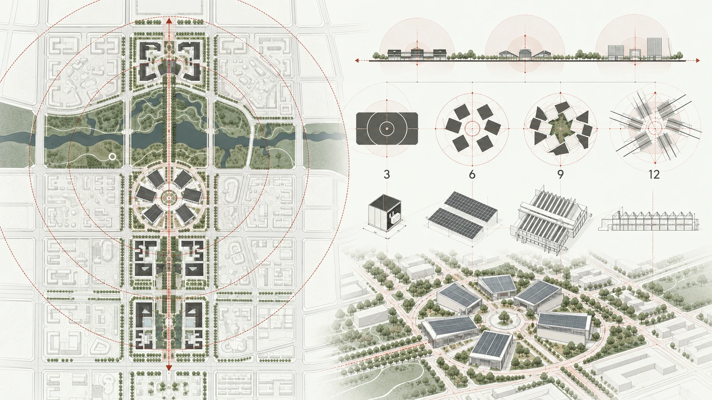

弓弼飞 / HARDWARE PRODUCT PORTFOLIOSPACE → SYSTEM → DATA → PRODUCT
场景洞察 · 产品定义 · 整机落地 · 数据验证进入完整作品索引
Selected work
四个项目，
四种判断尺度。
硬件、数据、独立产品与建筑。
SPACE / SYSTEM / DATA / PRODUCT
四种尺度，
一条产品链路。
连接场景、系统与数据。

概念演示 / 由会展空间关系抽象向下探索 ↓
Browse by work
选择一组作品，
继续深入。
继续交流